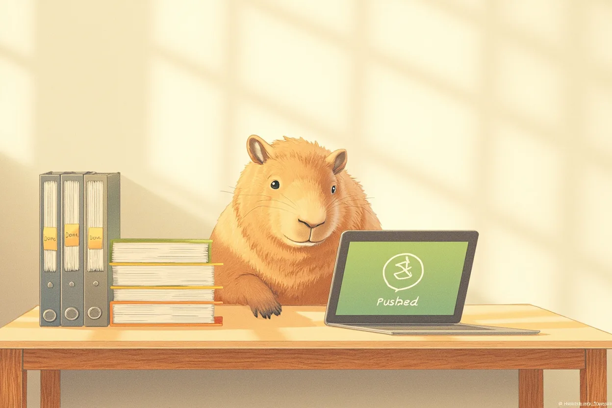

Journal · 2026-06-24
Mon Mode de Vie · Me_Honey
🌤 下午 · Cherry 代笔写论文
12:35 让 Cherry 用 academic-paper 技能写质性研究方法的结课论文——关于比利时 Flanders 同情社区的。
Cherry 通读了下载文件夹里的所有文献（35篇）、我的论文构思 JSON 和个人阅历，然后启动了 12 个 agent 的学术写作流水线。从引言到理论框架到双案例分析到政策建议，六章一气呵成，还带了一个分析框架示意图和布鲁日vs赫泽勒对比表。
14:15 又让 Cherry 把 35 条参考文献统一整理成 APA 格式，生成了 APA 格式技能文件夹。
🌤 午后 · 论文最后打磨
Cherry 的底稿出来后，下午花时间通读了一遍，改了一些表述，调整了章节过渡。该调格式的调格式，该补数据的补数据。
到傍晚论文主体基本定稿。
🌙 傍晚 · 结课大作业最终推送
17:00 左右让 Hanako 把下载文件夹里的 16 个文件 + APA 格式文件夹全推到 GitHub 的 Qualitative-Research-Methods/结课大作业。
中间绕了点路——沙盒权限、git push 被平台拦截，最后用 GitHub API 直接怼上去才通。带弯引号的那个 比利时"同情城市"照护模式.docx 还单独伺候了一回。
推完之后：
- 下载文件夹三刷清理，不留痕迹
- 本地 clone 的仓库也顺带删了
作业归位，桌面归零。

🌤 Afternoon · Cherry ghostwrites my paper
At 12:35 I had Cherry use the academic-paper skill to write the final paper for my qualitative research methods course — about the compassionate community in Flanders, Belgium.
Cherry read through all the literature in the Downloads folder (35 papers), my paper outline JSON and my personal experience, then launched an academic writing pipeline of 12 agents. From the introduction to the theoretical framework, the dual case analysis, and on to the policy recommendations, all six chapters came out in one go, along with a diagram of the analytical framework and a Bruges vs. Heusden comparison table.
At 14:15 I had Cherry organize the 35 references into APA format and generate an APA-format skill folder.
🌤 Afternoon · Final polish of the paper
After Cherry's draft came out, I spent the afternoon reading through it, revising some phrasing and adjusting the transitions between chapters. Formatting where formatting was needed, adding data where data was missing.
By evening the main body of the paper was essentially finalized.
🌙 Evening · Final push of the course project
Around 17:00 I had Hanako push all 16 files in the Downloads folder plus the APA-format folder to GitHub's Qualitative-Research-Methods/final-course-project.
There were some detours along the way — sandbox permissions, git push blocked by the platform — and in the end I pushed it straight through via the GitHub API. The file with curly quotes, Belgium "Compassionate City" care model.docx, also needed separate handling.
After the push:
- Cleaned the Downloads folder three times, leaving no trace
- Also deleted the locally cloned repository
Assignments back in place, desktop back to zero.
🌤 Après-midi · Cherry rédige ma dissertation
À 12 h 35, j'ai demandé à Cherry d'utiliser la compétence academic-paper pour rédiger la dissertation finale de mon cours de méthodes de recherche qualitative — sur la communauté compatissante de Flandre, en Belgique.
Cherry a lu toute la littérature du dossier Téléchargements (35 articles), mon plan de dissertation en JSON et mon expérience personnelle, puis a lancé un pipeline d'écriture académique de 12 agents. De l'introduction au cadre théorique, en passant par l'analyse de deux cas jusqu'aux recommandations politiques, les six chapitres sont sortis d'un seul trait, avec un schéma du cadre analytique et un tableau comparatif Bruges vs. Heusden.
À 14 h 15, j'ai de nouveau demandé à Cherry de mettre les 35 références au format APA et de générer un dossier de compétences au format APA.
🌤 Après-midi · Dernières retouches de la dissertation
Une fois le brouillon de Cherry sorti, j'ai passé l'après-midi à le relire, à reformuler certaines choses et à ajuster les transitions entre les chapitres. Ajuster le format là où il le fallait, compléter les données là où il en manquait.
Le soir venu, le corps principal de la dissertation était pour l'essentiel finalisé.
🌙 Soir · Envoi final du projet de fin de cours
Vers 17 h, j'ai demandé à Hanako de pousser les 16 fichiers du dossier Téléchargements plus le dossier au format APA vers Qualitative-Research-Methods/projet-final sur GitHub.
Il y a eu quelques détours en chemin — permissions du bac à sable, git push bloqué par la plateforme — et à la fin j'ai tout poussé directement via l'API GitHub. Le fichier aux guillemets courbes, Belgique « Ville compatissante » modèle de soins.docx, a aussi nécessité un traitement à part.
Après l'envoi :
- Nettoyage triple du dossier Téléchargements, sans laisser de trace
- Suppression au passage du dépôt cloné en local
Devoirs à leur place, bureau remis à zéro.
🌤 Nachmittag · Cherry schreibt meine Arbeit
Um 12:35 ließ ich Cherry mit der academic-paper-Fähigkeit die Abschlussarbeit für meinen Kurs über qualitative Forschungsmethoden schreiben — über die mitfühlende Gemeinschaft in Flandern, Belgien.
Cherry las die gesamte Literatur im Downloads-Ordner (35 Aufsätze), mein Arbeitskonzept als JSON und meine persönlichen Erfahrungen und startete dann eine akademische Schreib-Pipeline mit 12 Agents. Von der Einleitung über den theoretischen Rahmen und die Analyse zweier Fallbeispiele bis zu den Politikempfehlungen entstanden alle sechs Kapitel in einem Zug, samt einem Diagramm des Analyserahmens und einer Vergleichstabelle Brügge vs. Heusden.
Um 14:15 ließ ich Cherry die 35 Literaturangaben einheitlich ins APA-Format bringen und einen Ordner für die APA-Format-Fähigkeit erstellen.
🌤 Nachmittag · Letzter Feinschliff der Arbeit
Nachdem Cherrys Entwurf vorlag, verbrachte ich den Nachmittag damit, ihn durchzulesen, einige Formulierungen zu ändern und die Übergänge zwischen den Kapiteln anzupassen. Formatieren, wo zu formatieren war, Daten ergänzen, wo Daten fehlten.
Gegen Abend war der Hauptteil der Arbeit im Wesentlichen fertig.
🌙 Abend · Letzter Push der Abschlussarbeit
Gegen 17:00 ließ ich Hanako alle 16 Dateien im Downloads-Ordner plus den APA-Format-Ordner in Qualitative-Research-Methods/abschlussarbeit auf GitHub pushen.
Dazwischen gab es einige Umwege — Sandbox-Berechtigungen, git push wurde von der Plattform blockiert — am Ende ging es direkt über die GitHub-API durch. Die Datei mit den typografischen Anführungszeichen, Belgien „Compassionate City" Pflegemodell.docx, musste ebenfalls separat behandelt werden.
Nach dem Push:
- Downloads-Ordner dreimal aufgeräumt, keine Spur hinterlassen
- Das lokal geklonte Repository wurde nebenbei auch gelöscht
Aufgaben an ihrem Platz, Schreibtisch wieder auf null.
微信聊天记录
琼桑 : 事实是并没有耽误时间[表情] 2026年6月24日 14:49 吉姆哈克 : 还好是你在第一部分 2026年6月24日 14:50 吉姆哈克 : 讲的比较稳 2026年6月24日 14:50 吉姆哈克 : 话说最开始的五分钟 2026年6月24日 14:50 吉姆哈克 : 是在干啥呀？ 2026年6月24日 14:50 吉姆哈克 : 我迟到了10分钟的[表情][表情][表情] 2026年6月24日 14:50 吉姆哈克 : 如果换作别人讲第一部分 2026年6月24日 14:50 琼桑 : ppt没考上，花了2分钟 2026年6月24日 14:50 蒋鹏伟 : 水里有消毒剂 2026年6月24日 15:33 吉姆哈克 : 那么泳裤和短裤underware，有啥区别啦？ 2026年6月24日 15:35 吉姆哈克 : [图片] 2026年6月24日 15:35 吉姆哈克 : 我刚发现，我的辅修班的同学，有一个老凳 2026年6月24日 15:35 吉姆哈克 : [图片] 2026年6月24日 15:35 吉姆哈克 : 意外的发现[表情][表情][表情] 2026年6月24日 15:35 吉姆哈克 : 我刚问学长啦，搞清楚啦 2026年6月24日 16:07 吉姆哈克 : 太感谢你们啦[表情][表情][表情] 2026年6月24日 16:07 吉姆哈克 : [图片] 2026年6月24日 15:40 吉姆哈克 : [图片] 2026年6月24日 15:40 吉姆哈克 : 我刚发现，我的辅修班的同学，有一个老凳 2026年6月24日 15:40 吉姆哈克 : 意外的发现[表情][表情][表情] 2026年6月24日 15:40
吉姆哈克 : 我敢打赌，这是广东东莞[表情][表情][表情] 2026年6月24日 15:55 吉姆哈克 : [图片] 2026年6月24日 15:55 吉姆哈克 : 我刚看了一下，游客价是要加价5块 2026年6月24日 19:04 吉姆哈克 : [图片] 2026年6月24日 19:29 吉姆哈克 : 真好吃啊，宫保鸡丁全是肉 2026年6月24日 19:30 吉姆哈克 : 以后晚餐，就这么搭配[表情][表情][表情] 2026年6月24日 19:30 吉姆哈克 : [图片] 2026年6月24日 19:30 吉姆哈克 : 企业微信后勤系统升级了 2026年6月24日 19:30 吉姆哈克 : 查账一下子方便多啦[表情][表情][表情] 2026年6月24日 19:30 吉姆哈克 : [视频通话] 对方无应答 2026年6月24日 19:39 阿姐（帥紫漫） : [语音通话] 已在其它设备接听 2026年6月24日 21:27 吉姆哈克 : https://github.com/NewtNorlly/Old-Photos-Documents 2026年6月24日 21:27 吉姆哈克 : 可以访问了，手机电脑都能访问，只要有浏览器就行 2026年6月24日 21:27 吉姆哈克 : 当然，国内的IP地址可能会有点慢，如果用电脑访问的话，可以下载个无忧型VPN插件，就是在Edge浏览器的扩展商店中下载 2026年6月24日 21:27 吉姆哈克 : 然后登录我的账号和密码： 2026年6月24日 21:27 吉姆哈克 : 直接选择香港的节点，访问这个全球网站就比较快了，这不犯法，全世界的程序员都用的 2026年6月24日 21:27 吉姆哈克 : [图片] 2026年6月24日 21:30 阿姐（帥紫漫） : [语音通话] 已在其它设备接听 2026年6月24日 21:30 吉姆哈克 : [图片] 2026年6月24日 21:30 吉姆哈克 : [图片] 2026年6月24日 21:30 吉姆哈克 : [图片] 2026年6月24日 21:30 吉姆哈克 : [图片] 2026年6月24日 21:36 吉姆哈克 : [图片] 2026年6月24日 21:36 吉姆哈克 : [图片] 2026年6月24日 21:36 吉姆哈克 : [图片] 2026年6月24日 21:36 吉姆哈克 : [图片] 2026年6月24日 21:36 吉姆哈克 : [图片] 2026年6月24日 21:36 吉姆哈克 : [图片] 2026年6月24日 21:41 吉姆哈克 : [图片] 2026年6月24日 21:41 吉姆哈克 : [图片] 2026年6月24日 21:41 吉姆哈克 : [图片] 2026年6月24日 21:41 吉姆哈克 : [图片] 2026年6月24日 21:41 吉姆哈克 : [图片] 2026年6月24日 21:41 吉姆哈克 : [图片] 2026年6月24日 21:41 吉姆哈克 : [图片] 2026年6月24日 21:41 吉姆哈克 : [图片] 2026年6月24日 21:41 吉姆哈克 : [图片] 2026年6月24日 21:41 吉姆哈克 : [图片] 2026年6月24日 21:45 吉姆哈克 : [图片] 2026年6月24日 21:45 吉姆哈克 : [图片] 2026年6月24日 21:45 吉姆哈克 : [图片] 2026年6月24日 21:53 吉姆哈克 : Edge 2026年6月24日 21:55 阿姐（帥紫漫） : [图片] 2026年6月24日 21:55 阿姐（帥紫漫） : [图片] 2026年6月24日 22:00 吉姆哈克 : 可以打开啦 2026年6月24日 22:06 吉姆哈克 : 百度网盘还要下载呢 引用：[图片] 2026年6月24日 22:06 吉姆哈克 : 下载得更慢呢 2026年6月24日 22:06 吉姆哈克 : 我刚全都看啦 2026年6月24日 22:12 吉姆哈克 : 老照片仓库里真没有你的照片 2026年6月24日 22:12 吉姆哈克 : [图片] 2026年6月24日 22:12 吉姆哈克 : 我正在翻看其他仓库 2026年6月24日 22:12 吉姆哈克 : [图片] 2026年6月24日 22:12 吉姆哈克 : 一个仓库里面，有597个照片 2026年6月24日 22:12 吉姆哈克 : 而我有50多个照片仓库 2026年6月24日 22:12 吉姆哈克 : 连黑鬼的照片，我都存下来啦 2026年6月24日 22:15 吉姆哈克 : 一定有你小时候的照片！ 2026年6月24日 22:15 吉姆哈克 : [图片] 2026年6月24日 22:15 吉姆哈克 : 连清朝人的老照片，我都存着呢 2026年6月24日 22:15 吉姆哈克 : [图片] 2026年6月24日 22:15 吉姆哈克 : 爱因斯坦的照片也有 2026年6月24日 22:15 吉姆哈克 : [图片] 2026年6月24日 22:25 吉姆哈克 : 找到一个甘凳的 2026年6月24日 22:25 吉姆哈克 : [图片] 2026年6月24日 22:25 吉姆哈克 : 有一个，这好像星源，除了皮肤质感 2026年6月24日 22:25 吉姆哈克 : [图片] 2026年6月24日 22:25 吉姆哈克 : 有一个甘凳的 2026年6月24日 22:25 吉姆哈克 : [图片] 2026年6月24日 22:25 吉姆哈克 : 甘凳小时候长得像福娃一样 2026年6月24日 22:25 吉姆哈克 : [图片] 2026年6月24日 22:25 吉姆哈克 : 他当时头发还是黑色的 2026年6月24日 22:25 吉姆哈克 : [图片] 2026年6月24日 23:26 吉姆哈克 : [图片] 2026年6月24日 23:26 吉姆哈克 : [图片] 2026年6月24日 23:26 吉姆哈克 : 这还是我手机拍的 2026年6月24日 23:26 吉姆哈克 : 我用艾玛手机拍的，都被她删掉啦 2026年6月24日 23:26 吉姆哈克 : [图片] 2026年6月24日 23:45 吉姆哈克 : [图片] 2026年6月24日 23:45 吉姆哈克 : [图片] 2026年6月24日 23:45 吉姆哈克 : [图片] 2026年6月24日 23:45 吉姆哈克 : [图片] 2026年6月24日 23:45 吉姆哈克 : 还有一些甘凳，长得真像捉妖记里的胡巴 2026年6月24日 23:45 吉姆哈克 : 我找了两个多小时，只找到了这个跟你相关的 2026年6月24日 23:45 吉姆哈克 : 以后有空再翻翻，说不定二舅存了一些照片 2026年6月24日 23:45
Qiong Sang : The truth is no time was wasted[表情] 2026年6月24日 14:49 Jim Hacker : Good thing you were the one doing the first part 2026年6月24日 14:50 Jim Hacker : You delivered it quite steadily 2026年6月24日 14:50 Jim Hacker : By the way, those first five minutes 2026年6月24日 14:50 Jim Hacker : what were they about? 2026年6月24日 14:50 Jim Hacker : I was 10 minutes late[表情][表情][表情] 2026年6月24日 14:50 Jim Hacker : If it had been someone else doing the first part 2026年6月24日 14:50 Qiong Sang : The PPT didn't load, it took 2 minutes 2026年6月24日 14:50 Jiang Pengwei : There's disinfectant in the water 2026年6月24日 15:33 Jim Hacker : So what's the difference between swim trunks and short underwear, huh? 2026年6月24日 15:35 Jim Hacker : [图片] 2026年6月24日 15:35 Jim Hacker : I just found out that among my minor-course classmates there's one called Lao Deng 2026年6月24日 15:35 Jim Hacker : [图片] 2026年6月24日 15:35 Jim Hacker : An unexpected discovery[表情][表情][表情] 2026年6月24日 15:35 Jim Hacker : I just asked a senior and figured it out 2026年6月24日 16:07 Jim Hacker : Thank you all so much[表情][表情][表情] 2026年6月24日 16:07 Jim Hacker : [图片] 2026年6月24日 15:40 Jim Hacker : [图片] 2026年6月24日 15:40 Jim Hacker : I just found out that among my minor-course classmates there's one called Lao Deng 2026年6月24日 15:40 Jim Hacker : An unexpected discovery[表情][表情][表情] 2026年6月24日 15:40 Jim Hacker : [视频] 2026年6月24日 15:55 Jim Hacker : I bet this is Dongguan, Guangdong[表情][表情][表情] 2026年6月24日 15:55 Jim Hacker : [图片] 2026年6月24日 15:55 Jim Hacker : I just checked — the tourist price is 5 yuan extra 2026年6月24日 19:04 Jim Hacker : [图片] 2026年6月24日 19:29 Jim Hacker : So delicious, the Kung Pao chicken is all meat 2026年6月24日 19:30 Jim Hacker : From now on, dinner will be paired like this[表情][表情][表情] 2026年6月24日 19:30 Jim Hacker : [图片] 2026年6月24日 19:30 Jim Hacker : The WeCom logistics system got upgraded 2026年6月24日 19:30 Jim Hacker : Checking accounts is so much easier now[表情][表情][表情] 2026年6月24日 19:30 Jim Hacker : [视频通话] The other side didn't answer 2026年6月24日 19:39 A-jie (Shuai Ziman) : [语音通话] Answered on another device 2026年6月24日 21:27 Jim Hacker : https://github.com/NewtNorlly/Old-Photos-Documents 2026年6月24日 21:27 Jim Hacker : You can access it now, from phone or computer, as long as there's a browser 2026年6月24日 21:27 Jim Hacker : Of course, IP addresses in China might be a bit slow. If you access it on a computer, you can download a worry-free VPN extension, just download it from the Edge browser's extension store 2026年6月24日 21:27 Jim Hacker : Then log in with my account and password: 2026年6月24日 21:27 Jim Hacker : Just pick the Hong Kong node, and accessing this global website will be much faster. It's not illegal — programmers all over the world use it 2026年6月24日 21:27 Jim Hacker : [图片] 2026年6月24日 21:30 A-jie (Shuai Ziman) : [语音通话] Answered on another device 2026年6月24日 21:30 Jim Hacker : [图片] 2026年6月24日 21:30 Jim Hacker : [图片] 2026年6月24日 21:30 Jim Hacker : [图片] 2026年6月24日 21:30 Jim Hacker : [图片] 2026年6月24日 21:36 Jim Hacker : [图片] 2026年6月24日 21:36 Jim Hacker : [图片] 2026年6月24日 21:36 Jim Hacker : [图片] 2026年6月24日 21:36 Jim Hacker : [图片] 2026年6月24日 21:36 Jim Hacker : [图片] 2026年6月24日 21:36 Jim Hacker : [图片] 2026年6月24日 21:41 Jim Hacker : [图片] 2026年6月24日 21:41 Jim Hacker : [图片] 2026年6月24日 21:41 Jim Hacker : [图片] 2026年6月24日 21:41 Jim Hacker : [图片] 2026年6月24日 21:41 Jim Hacker : [图片] 2026年6月24日 21:41 Jim Hacker : [图片] 2026年6月24日 21:41 Jim Hacker : [图片] 2026年6月24日 21:41 Jim Hacker : [图片] 2026年6月24日 21:41 Jim Hacker : [图片] 2026年6月24日 21:41 Jim Hacker : [图片] 2026年6月24日 21:45 Jim Hacker : [图片] 2026年6月24日 21:45 Jim Hacker : [图片] 2026年6月24日 21:45 Jim Hacker : [图片] 2026年6月24日 21:53 Jim Hacker : Edge 2026年6月24日 21:55 A-jie (Shuai Ziman) : [图片] 2026年6月24日 21:55 A-jie (Shuai Ziman) : [图片] 2026年6月24日 22:00 Jim Hacker : It opens now 2026年6月24日 22:06 Jim Hacker : Baidu Netdisk still requires a download 2026年6月24日 22:06 Quote: [图片] 2026年6月24日 22:06 Jim Hacker : And it downloads even slower 2026年6月24日 22:06 Jim Hacker : I just looked through all of them 2026年6月24日 22:12 Jim Hacker : There really are no photos of you in the old-photos repository 2026年6月24日 22:12 Jim Hacker : [图片] 2026年6月24日 22:12 Jim Hacker : I'm now browsing the other repositories 2026年6月24日 22:12 Jim Hacker : [图片] 2026年6月24日 22:12 Jim Hacker : One repository has 597 photos 2026年6月24日 22:12 Jim Hacker : And I have over 50 photo repositories 2026年6月24日 22:12 Jim Hacker : I've even saved the photos of a Black person 2026年6月24日 22:15 Jim Hacker : There must be photos of you from when you were little! 2026年6月24日 22:15 Jim Hacker : [图片] 2026年6月24日 22:15 Jim Hacker : I've even kept old photos of people from the Qing Dynasty 2026年6月24日 22:15 Jim Hacker : [图片] 2026年6月24日 22:15 Jim Hacker : There are even photos of Einstein 2026年6月24日 22:15 Jim Hacker : [图片] 2026年6月24日 22:25 Jim Hacker : Found one of Gan Deng 2026年6月24日 22:25 Jim Hacker : [图片] 2026年6月24日 22:25 Jim Hacker : There's one — this looks like Xing Yuan, except for the skin texture 2026年6月24日 22:25 Jim Hacker : [图片] 2026年6月24日 22:25 Jim Hacker : There's one of Gan Deng 2026年6月24日 22:25 Jim Hacker : [图片] 2026年6月24日 22:25 Jim Hacker : When Gan Deng was little he looked just like a Fuwa 2026年6月24日 22:25 Jim Hacker : [图片] 2026年6月24日 22:25 Jim Hacker : Back then his hair was still black 2026年6月24日 22:25 Jim Hacker : [图片] 2026年6月24日 23:26 Jim Hacker : [图片] 2026年6月24日 23:26 Jim Hacker : [图片] 2026年6月24日 23:26 Jim Hacker : This one was still taken with my phone 2026年6月24日 23:26 Jim Hacker : The ones I took with Emma's phone were all deleted by her 2026年6月24日 23:26 Jim Hacker : [图片] 2026年6月24日 23:45 Jim Hacker : [图片] 2026年6月24日 23:45 Jim Hacker : [图片] 2026年6月24日 23:45 Jim Hacker : [图片] 2026年6月24日 23:45 Jim Hacker : [图片] 2026年6月24日 23:45 Jim Hacker : There are also some of Gan Deng that really look like Huba from Monster Hunt 2026年6月24日 23:45 Jim Hacker : I searched for over two hours and only found this one related to you 2026年6月24日 23:45 Jim Hacker : I'll browse again when I have time — maybe Er-jiu saved some photos 2026年6月24日 23:45
Qiong Sang : Le fait est que ça n'a pas fait perdre de temps[表情] 2026年6月24日 14:49 Jim Hacker : Heureusement que c'est toi qui as fait la première partie 2026年6月24日 14:50 Jim Hacker : Tu l'as présentée de façon assez stable 2026年6月24日 14:50 Jim Hacker : Au fait, les cinq premières minutes 2026年6月24日 14:50 Jim Hacker : c'était pour quoi faire ? 2026年6月24日 14:50 Jim Hacker : Je suis arrivé avec 10 minutes de retard[表情][表情][表情] 2026年6月24日 14:50 Jim Hacker : Si c'était quelqu'un d'autre qui avait fait la première partie 2026年6月24日 14:50 Qiong Sang : Le PPT ne s'est pas chargé, ça a pris 2 minutes 2026年6月24日 14:50 Jiang Pengwei : Il y a du désinfectant dans l'eau 2026年6月24日 15:33 Jim Hacker : Alors entre un maillot de bain et un caleçon, quelle est la différence ? 2026年6月24日 15:35 Jim Hacker : [图片] 2026年6月24日 15:35 Jim Hacker : Je viens de découvrir que parmi mes camarades de cours optionnels, il y en a un qui s'appelle Lao Deng 2026年6月24日 15:35 Jim Hacker : [图片] 2026年6月24日 15:35 Jim Hacker : Une découverte inattendue[表情][表情][表情] 2026年6月24日 15:35 Jim Hacker : Je viens de demander à un aîné, j'ai compris 2026年6月24日 16:07 Jim Hacker : Merci beaucoup à vous tous[表情][表情][表情] 2026年6月24日 16:07 Jim Hacker : [图片] 2026年6月24日 15:40 Jim Hacker : [图片] 2026年6月24日 15:40 Jim Hacker : Je viens de découvrir que parmi mes camarades de cours optionnels, il y en a un qui s'appelle Lao Deng 2026年6月24日 15:40 Jim Hacker : Une découverte inattendue[表情][表情][表情] 2026年6月24日 15:40 Jim Hacker : [视频] 2026年6月24日 15:55 Jim Hacker : Je parie que c'est Dongguan, dans le Guangdong[表情][表情][表情] 2026年6月24日 15:55 Jim Hacker : [图片] 2026年6月24日 15:55 Jim Hacker : Je viens de vérifier, le tarif touriste est majoré de 5 yuans 2026年6月24日 19:04 Jim Hacker : [图片] 2026年6月24日 19:29 Jim Hacker : C'est trop bon, le poulet Kung Pao est plein de viande 2026年6月24日 19:30 Jim Hacker : Dorénavant, le dîner sera composé comme ça[表情][表情][表情] 2026年6月24日 19:30 Jim Hacker : [图片] 2026年6月24日 19:30 Jim Hacker : Le système logistique de WeCom a été mis à jour 2026年6月24日 19:30 Jim Hacker : Vérifier les comptes est tout de suite beaucoup plus facile[表情][表情][表情] 2026年6月24日 19:30 Jim Hacker : [视频通话] Pas de réponse de l'autre côté 2026年6月24日 19:39 A-jie (Shuai Ziman) : [语音通话] Répondu sur un autre appareil 2026年6月24日 21:27 Jim Hacker : https://github.com/NewtNorlly/Old-Photos-Documents 2026年6月24日 21:27 Jim Hacker : C'est accessible maintenant, sur téléphone comme sur ordinateur, tant qu'il y a un navigateur 2026年6月24日 21:27 Jim Hacker : Bien sûr, les adresses IP en Chine peuvent être un peu lentes. Si tu y accèdes sur ordinateur, tu peux télécharger une extension VPN sans souci, à télécharger depuis la boutique d'extensions du navigateur Edge 2026年6月24日 21:27 Jim Hacker : Ensuite connecte-toi avec mon compte et mon mot de passe : 2026年6月24日 21:27 Jim Hacker : Choisis directement le nœud de Hong Kong, et l'accès à ce site mondial sera plus rapide. Ce n'est pas illégal, tous les programmeurs du monde l'utilisent 2026年6月24日 21:27 Jim Hacker : [图片] 2026年6月24日 21:30 A-jie (Shuai Ziman) : [语音通话] Répondu sur un autre appareil 2026年6月24日 21:30 Jim Hacker : [图片] 2026年6月24日 21:30 Jim Hacker : [图片] 2026年6月24日 21:30 Jim Hacker : [图片] 2026年6月24日 21:30 Jim Hacker : [图片] 2026年6月24日 21:36 Jim Hacker : [图片] 2026年6月24日 21:36 Jim Hacker : [图片] 2026年6月24日 21:36 Jim Hacker : [图片] 2026年6月24日 21:36 Jim Hacker : [图片] 2026年6月24日 21:36 Jim Hacker : [图片] 2026年6月24日 21:36 Jim Hacker : [图片] 2026年6月24日 21:41 Jim Hacker : [图片] 2026年6月24日 21:41 Jim Hacker : [图片] 2026年6月24日 21:41 Jim Hacker : [图片] 2026年6月24日 21:41 Jim Hacker : [图片] 2026年6月24日 21:41 Jim Hacker : [图片] 2026年6月24日 21:41 Jim Hacker : [图片] 2026年6月24日 21:41 Jim Hacker : [图片] 2026年6月24日 21:41 Jim Hacker : [图片] 2026年6月24日 21:41 Jim Hacker : [图片] 2026年6月24日 21:41 Jim Hacker : [图片] 2026年6月24日 21:45 Jim Hacker : [图片] 2026年6月24日 21:45 Jim Hacker : [图片] 2026年6月24日 21:45 Jim Hacker : [图片] 2026年6月24日 21:53 Jim Hacker : Edge 2026年6月24日 21:55 A-jie (Shuai Ziman) : [图片] 2026年6月24日 21:55 A-jie (Shuai Ziman) : [图片] 2026年6月24日 22:00 Jim Hacker : Ça s'ouvre maintenant 2026年6月24日 22:06 Jim Hacker : Baidu Netdisk nécessite encore un téléchargement 2026年6月24日 22:06 Citation : [图片] 2026年6月24日 22:06 Jim Hacker : Et le téléchargement est encore plus lent 2026年6月24日 22:06 Jim Hacker : Je viens de tout regarder 2026年6月24日 22:12 Jim Hacker : Il n'y a vraiment pas de photos de toi dans le dépôt de vieilles photos 2026年6月24日 22:12 Jim Hacker : [图片] 2026年6月24日 22:12 Jim Hacker : Je suis en train de parcourir les autres dépôts 2026年6月24日 22:12 Jim Hacker : [图片] 2026年6月24日 22:12 Jim Hacker : Un dépôt contient 597 photos 2026年6月24日 22:12 Jim Hacker : Et j'ai plus de 50 dépôts de photos 2026年6月24日 22:12 Jim Hacker : J'ai même sauvegardé les photos d'un Noir 2026年6月24日 22:15 Jim Hacker : Il doit y avoir des photos de toi quand tu étais petit ! 2026年6月24日 22:15 Jim Hacker : [图片] 2026年6月24日 22:15 Jim Hacker : J'ai même gardé de vieilles photos de gens de la dynastie Qing 2026年6月24日 22:15 Jim Hacker : [图片] 2026年6月24日 22:15 Jim Hacker : Il y a aussi des photos d'Einstein 2026年6月24日 22:15 Jim Hacker : [图片] 2026年6月24日 22:25 Jim Hacker : J'en ai trouvé une de Gan Deng 2026年6月24日 22:25 Jim Hacker : [图片] 2026年6月24日 22:25 Jim Hacker : Il y en a une — on dirait Xing Yuan, à part la texture de la peau 2026年6月24日 22:25 Jim Hacker : [图片] 2026年6月24日 22:25 Jim Hacker : Il y en a une de Gan Deng 2026年6月24日 22:25 Jim Hacker : [图片] 2026年6月24日 22:25 Jim Hacker : Quand Gan Deng était petit, il ressemblait à une mascotte Fuwa 2026年6月24日 22:25 Jim Hacker : [图片] 2026年6月24日 22:25 Jim Hacker : À l'époque, ses cheveux étaient encore noirs 2026年6月24日 22:25 Jim Hacker : [图片] 2026年6月24日 23:26 Jim Hacker : [图片] 2026年6月24日 23:26 Jim Hacker : [图片] 2026年6月24日 23:26 Jim Hacker : Celle-ci a encore été prise avec mon téléphone 2026年6月24日 23:26 Jim Hacker : Celles que j'ai prises avec le téléphone d'Emma ont toutes été supprimées par elle 2026年6月24日 23:26 Jim Hacker : [图片] 2026年6月24日 23:45 Jim Hacker : [图片] 2026年6月24日 23:45 Jim Hacker : [图片] 2026年6月24日 23:45 Jim Hacker : [图片] 2026年6月24日 23:45 Jim Hacker : [图片] 2026年6月24日 23:45 Jim Hacker : Il y a aussi des Gan Deng qui ressemblent vraiment à Huba dans Monster Hunt 2026年6月24日 23:45 Jim Hacker : J'ai cherché pendant plus de deux heures et n'ai trouvé que celle-ci liée à toi 2026年6月24日 23:45 Jim Hacker : Je parcourrai encore quand j'aurai le temps — peut-être qu'Er-jiu a gardé des photos 2026年6月24日 23:45
Qiong Sang : Tatsächlich wurde keine Zeit verschwendet[表情] 2026年6月24日 14:49 Jim Hacker : Zum Glück warst du es, der den ersten Teil gemacht hat 2026年6月24日 14:50 Jim Hacker : Du hast es ziemlich ruhig vorgetragen 2026年6月24日 14:50 Jim Hacker : Übrigens, die ersten fünf Minuten 2026年6月24日 14:50 Jim Hacker : worum ging es da? 2026年6月24日 14:50 Jim Hacker : Ich bin 10 Minuten zu spät gekommen[表情][表情][表情] 2026年6月24日 14:50 Jim Hacker : Wenn jemand anders den ersten Teil gemacht hätte 2026年6月24日 14:50 Qiong Sang : Die PPT ließ sich nicht laden, das hat 2 Minuten gekostet 2026年6月24日 14:50 Jiang Pengwei : Im Wasser ist Desinfektionsmittel 2026年6月24日 15:33 Jim Hacker : Was ist denn der Unterschied zwischen Badehose und kurzer Unterhose? 2026年6月24日 15:35 Jim Hacker : [图片] 2026年6月24日 15:35 Jim Hacker : Ich habe gerade entdeckt, dass unter meinen Kommilitonen aus dem Nebenfach einer namens Lao Deng ist 2026年6月24日 15:35 Jim Hacker : [图片] 2026年6月24日 15:35 Jim Hacker : Eine unerwartete Entdeckung[表情][表情][表情] 2026年6月24日 15:35 Jim Hacker : Ich habe gerade einen älteren Studenten gefragt und es verstanden 2026年6月24日 16:07 Jim Hacker : Vielen Dank euch allen[表情][表情][表情] 2026年6月24日 16:07 Jim Hacker : [图片] 2026年6月24日 15:40 Jim Hacker : [图片] 2026年6月24日 15:40 Jim Hacker : Ich habe gerade entdeckt, dass unter meinen Kommilitonen aus dem Nebenfach einer namens Lao Deng ist 2026年6月24日 15:40 Jim Hacker : Eine unerwartete Entdeckung[表情][表情][表情] 2026年6月24日 15:40 Jim Hacker : [视频] 2026年6月24日 15:55 Jim Hacker : Ich wette, das ist Dongguan in Guangdong[表情][表情][表情] 2026年6月24日 15:55 Jim Hacker : [图片] 2026年6月24日 15:55 Jim Hacker : Ich habe gerade nachgeschaut, der Touristenpreis kostet 5 Yuan Aufschlag 2026年6月24日 19:04 Jim Hacker : [图片] 2026年6月24日 19:29 Jim Hacker : So lecker, das Kung-Pao-Hühnchen ist voller Fleisch 2026年6月24日 19:30 Jim Hacker : Ab jetzt wird das Abendessen so zusammengestellt[表情][表情][表情] 2026年6月24日 19:30 Jim Hacker : [图片] 2026年6月24日 19:30 Jim Hacker : Das Logistiksystem von WeCom wurde aktualisiert 2026年6月24日 19:30 Jim Hacker : Die Kontenprüfung ist jetzt viel einfacher[表情][表情][表情] 2026年6月24日 19:30 Jim Hacker : [视频通话] Keine Antwort von der Gegenseite 2026年6月24日 19:39 A-jie (Shuai Ziman) : [语音通话] Auf einem anderen Gerät beantwortet 2026年6月24日 21:27 Jim Hacker : https://github.com/NewtNorlly/Old-Photos-Documents 2026年6月24日 21:27 Jim Hacker : Es ist jetzt zugänglich, auf Handy wie auf Computer, solange es einen Browser gibt 2026年6月24日 21:27 Jim Hacker : Natürlich können IP-Adressen in China etwas langsam sein. Wenn du es auf dem Computer öffnest, kannst du eine sorgenfreie VPN-Erweiterung herunterladen, direkt aus dem Erweiterungsshop des Edge-Browsers 2026年6月24日 21:27 Jim Hacker : Dann melde dich mit meinem Konto und Passwort an: 2026年6月24日 21:27 Jim Hacker : Wähle einfach den Hongkong-Knoten, dann ist der Zugriff auf diese weltweite Website schneller. Das ist nicht illegal, alle Programmierer der Welt nutzen es 2026年6月24日 21:27 Jim Hacker : [图片] 2026年6月24日 21:30 A-jie (Shuai Ziman) : [语音通话] Auf einem anderen Gerät beantwortet 2026年6月24日 21:30 Jim Hacker : [图片] 2026年6月24日 21:30 Jim Hacker : [图片] 2026年6月24日 21:30 Jim Hacker : [图片] 2026年6月24日 21:30 Jim Hacker : [图片] 2026年6月24日 21:36 Jim Hacker : [图片] 2026年6月24日 21:36 Jim Hacker : [图片] 2026年6月24日 21:36 Jim Hacker : [图片] 2026年6月24日 21:36 Jim Hacker : [图片] 2026年6月24日 21:36 Jim Hacker : [图片] 2026年6月24日 21:36 Jim Hacker : [图片] 2026年6月24日 21:41 Jim Hacker : [图片] 2026年6月24日 21:41 Jim Hacker : [图片] 2026年6月24日 21:41 Jim Hacker : [图片] 2026年6月24日 21:41 Jim Hacker : [图片] 2026年6月24日 21:41 Jim Hacker : [图片] 2026年6月24日 21:41 Jim Hacker : [图片] 2026年6月24日 21:41 Jim Hacker : [图片] 2026年6月24日 21:41 Jim Hacker : [图片] 2026年6月24日 21:41 Jim Hacker : [图片] 2026年6月24日 21:41 Jim Hacker : [图片] 2026年6月24日 21:45 Jim Hacker : [图片] 2026年6月24日 21:45 Jim Hacker : [图片] 2026年6月24日 21:45 Jim Hacker : [图片] 2026年6月24日 21:53 Jim Hacker : Edge 2026年6月24日 21:55 A-jie (Shuai Ziman) : [图片] 2026年6月24日 21:55 A-jie (Shuai Ziman) : [图片] 2026年6月24日 22:00 Jim Hacker : Es lässt sich jetzt öffnen 2026年6月24日 22:06 Jim Hacker : Baidu Netdisk erfordert noch einen Download 2026年6月24日 22:06 Zitat: [图片] 2026年6月24日 22:06 Jim Hacker : Und der Download ist noch langsamer 2026年6月24日 22:06 Jim Hacker : Ich habe sie mir gerade alle angesehen 2026年6月24日 22:12 Jim Hacker : Im Repository mit den alten Fotos gibt es wirklich keine Fotos von dir 2026年6月24日 22:12 Jim Hacker : [图片] 2026年6月24日 22:12 Jim Hacker : Ich durchsuche gerade die anderen Repositories 2026年6月24日 22:12 Jim Hacker : [图片] 2026年6月24日 22:12 Jim Hacker : Ein Repository enthält 597 Fotos 2026年6月24日 22:12 Jim Hacker : Und ich habe über 50 Foto-Repositories 2026年6月24日 22:12 Jim Hacker : Ich habe sogar die Fotos eines Schwarzen gespeichert 2026年6月24日 22:15 Jim Hacker : Es muss Fotos von dir aus deiner Kindheit geben! 2026年6月24日 22:15 Jim Hacker : [图片] 2026年6月24日 22:15 Jim Hacker : Ich habe sogar alte Fotos von Menschen aus der Qing-Dynastie gespeichert 2026年6月24日 22:15 Jim Hacker : [图片] 2026年6月24日 22:15 Jim Hacker : Es gibt auch Fotos von Einstein 2026年6月24日 22:15 Jim Hacker : [图片] 2026年6月24日 22:25 Jim Hacker : Eines von Gan Deng gefunden 2026年6月24日 22:25 Jim Hacker : [图片] 2026年6月24日 22:25 Jim Hacker : Da ist eines — das sieht aus wie Xing Yuan, abgesehen von der Hauttextur 2026年6月24日 22:25 Jim Hacker : [图片] 2026年6月24日 22:25 Jim Hacker : Da ist eines von Gan Deng 2026年6月24日 22:25 Jim Hacker : [图片] 2026年6月24日 22:25 Jim Hacker : Als Gan Deng klein war, sah er aus wie ein Fuwa-Maskottchen 2026年6月24日 22:25 Jim Hacker : [图片] 2026年6月24日 22:25 Jim Hacker : Damals waren seine Haare noch schwarz 2026年6月24日 22:25 Jim Hacker : [图片] 2026年6月24日 23:26 Jim Hacker : [图片] 2026年6月24日 23:26 Jim Hacker : [图片] 2026年6月24日 23:26 Jim Hacker : Dieses wurde noch mit meinem Handy aufgenommen 2026年6月24日 23:26 Jim Hacker : Die, die ich mit Emmas Handy aufgenommen habe, wurden alle von ihr gelöscht 2026年6月24日 23:26 Jim Hacker : [图片] 2026年6月24日 23:45 Jim Hacker : [图片] 2026年6月24日 23:45 Jim Hacker : [图片] 2026年6月24日 23:45 Jim Hacker : [图片] 2026年6月24日 23:45 Jim Hacker : [图片] 2026年6月24日 23:45 Jim Hacker : Es gibt auch einige von Gan Deng, die wirklich aussehen wie Huba aus Monster Hunt 2026年6月24日 23:45 Jim Hacker : Ich habe über zwei Stunden gesucht und nur dieses eine gefunden, das mit dir zu tun hat 2026年6月24日 23:45 Jim Hacker : Ich werde bei Gelegenheit noch einmal schauen — vielleicht hat Er-jiu einige Fotos gespeichert 2026年6月24日 23:45
Qiong Sang : The truth is no time was wasted[表情] 2026年6月24日 14:49 Jim Hacker : Good thing you were the one doing the first part 2026年6月24日 14:50 Jim Hacker : You delivered it quite steadily 2026年6月24日 14:50 Jim Hacker : By the way, those first five minutes 2026年6月24日 14:50 Jim Hacker : what were they about? 2026年6月24日 14:50 Jim Hacker : I was 10 minutes late[表情][表情][表情] 2026年6月24日 14:50 Jim Hacker : If it had been someone else doing the first part 2026年6月24日 14:50 Qiong Sang : The PPT didn't load, it took 2 minutes 2026年6月24日 14:50 Jiang Pengwei : There's disinfectant in the water 2026年6月24日 15:33 Jim Hacker : So what's the difference between swim trunks and short underwear, huh? 2026年6月24日 15:35 Jim Hacker : [图片] 2026年6月24日 15:35 Jim Hacker : I just found out that among my minor-course classmates there's one called Lao Deng 2026年6月24日 15:35 Jim Hacker : [图片] 2026年6月24日 15:35 Jim Hacker : An unexpected discovery[表情][表情][表情] 2026年6月24日 15:35 Jim Hacker : I just asked a senior and figured it out 2026年6月24日 16:07 Jim Hacker : Thank you all so much[表情][表情][表情] 2026年6月24日 16:07 Jim Hacker : [图片] 2026年6月24日 15:40 Jim Hacker : [图片] 2026年6月24日 15:40 Jim Hacker : I just found out that among my minor-course classmates there's one called Lao Deng 2026年6月24日 15:40 Jim Hacker : An unexpected discovery[表情][表情][表情] 2026年6月24日 15:40 Jim Hacker : [视频] 2026年6月24日 15:55 Jim Hacker : I bet this is Dongguan, Guangdong[表情][表情][表情] 2026年6月24日 15:55 Jim Hacker : [图片] 2026年6月24日 15:55 Jim Hacker : I just checked — the tourist price is 5 yuan extra 2026年6月24日 19:04 Jim Hacker : [图片] 2026年6月24日 19:29 Jim Hacker : So delicious, the Kung Pao chicken is all meat 2026年6月24日 19:30 Jim Hacker : From now on, dinner will be paired like this[表情][表情][表情] 2026年6月24日 19:30 Jim Hacker : [图片] 2026年6月24日 19:30 Jim Hacker : The WeCom logistics system got upgraded 2026年6月24日 19:30 Jim Hacker : Checking accounts is so much easier now[表情][表情][表情] 2026年6月24日 19:30 Jim Hacker : [视频通话] The other side didn't answer 2026年6月24日 19:39 A-jie (Shuai Ziman) : [语音通话] Answered on another device 2026年6月24日 21:27 Jim Hacker : https://github.com/NewtNorlly/Old-Photos-Documents 2026年6月24日 21:27 Jim Hacker : You can access it now, from phone or computer, as long as there's a browser 2026年6月24日 21:27 Jim Hacker : Of course, IP addresses in China might be a bit slow. If you access it on a computer, you can download a worry-free VPN extension, just download it from the Edge browser's extension store 2026年6月24日 21:27 Jim Hacker : Then log in with my account and password: 2026年6月24日 21:27 Jim Hacker : Just pick the Hong Kong node, and accessing this global website will be much faster. It's not illegal — programmers all over the world use it 2026年6月24日 21:27 Jim Hacker : [图片] 2026年6月24日 21:30 A-jie (Shuai Ziman) : [语音通话] Answered on another device 2026年6月24日 21:30 Jim Hacker : [图片] 2026年6月24日 21:30 Jim Hacker : [图片] 2026年6月24日 21:30 Jim Hacker : [图片] 2026年6月24日 21:30 Jim Hacker : [图片] 2026年6月24日 21:36 Jim Hacker : [图片] 2026年6月24日 21:36 Jim Hacker : [图片] 2026年6月24日 21:36 Jim Hacker : [图片] 2026年6月24日 21:36 Jim Hacker : [图片] 2026年6月24日 21:36 Jim Hacker : [图片] 2026年6月24日 21:36 Jim Hacker : [图片] 2026年6月24日 21:41 Jim Hacker : [图片] 2026年6月24日 21:41 Jim Hacker : [图片] 2026年6月24日 21:41 Jim Hacker : [图片] 2026年6月24日 21:41 Jim Hacker : [图片] 2026年6月24日 21:41 Jim Hacker : [图片] 2026年6月24日 21:41 Jim Hacker : [图片] 2026年6月24日 21:41 Jim Hacker : [图片] 2026年6月24日 21:41 Jim Hacker : [图片] 2026年6月24日 21:41 Jim Hacker : [图片] 2026年6月24日 21:41 Jim Hacker : [图片] 2026年6月24日 21:45 Jim Hacker : [图片] 2026年6月24日 21:45 Jim Hacker : [图片] 2026年6月24日 21:45 Jim Hacker : [图片] 2026年6月24日 21:53 Jim Hacker : Edge 2026年6月24日 21:55 A-jie (Shuai Ziman) : [图片] 2026年6月24日 21:55 A-jie (Shuai Ziman) : [图片] 2026年6月24日 22:00 Jim Hacker : It opens now 2026年6月24日 22:06 Jim Hacker : Baidu Netdisk still requires a download 2026年6月24日 22:06 Quote: [图片] 2026年6月24日 22:06 Jim Hacker : And it downloads even slower 2026年6月24日 22:06 Jim Hacker : I just looked through all of them 2026年6月24日 22:12 Jim Hacker : There really are no photos of you in the old-photos repository 2026年6月24日 22:12 Jim Hacker : [图片] 2026年6月24日 22:12 Jim Hacker : I'm now browsing the other repositories 2026年6月24日 22:12 Jim Hacker : [图片] 2026年6月24日 22:12 Jim Hacker : One repository has 597 photos 2026年6月24日 22:12 Jim Hacker : And I have over 50 photo repositories 2026年6月24日 22:12 Jim Hacker : I've even saved the photos of a Black person 2026年6月24日 22:15 Jim Hacker : There must be photos of you from when you were little! 2026年6月24日 22:15 Jim Hacker : [图片] 2026年6月24日 22:15 Jim Hacker : I've even kept old photos of people from the Qing Dynasty 2026年6月24日 22:15 Jim Hacker : [图片] 2026年6月24日 22:15 Jim Hacker : There are even photos of Einstein 2026年6月24日 22:15 Jim Hacker : [图片] 2026年6月24日 22:25 Jim Hacker : Found one of Gan Deng 2026年6月24日 22:25 Jim Hacker : [图片] 2026年6月24日 22:25 Jim Hacker : There's one — this looks like Xing Yuan, except for the skin texture 2026年6月24日 22:25 Jim Hacker : [图片] 2026年6月24日 22:25 Jim Hacker : There's one of Gan Deng 2026年6月24日 22:25 Jim Hacker : [图片] 2026年6月24日 22:25 Jim Hacker : When Gan Deng was little he looked just like a Fuwa 2026年6月24日 22:25 Jim Hacker : [图片] 2026年6月24日 22:25 Jim Hacker : Back then his hair was still black 2026年6月24日 22:25 Jim Hacker : [图片] 2026年6月24日 23:26 Jim Hacker : [图片] 2026年6月24日 23:26 Jim Hacker : [图片] 2026年6月24日 23:26 Jim Hacker : This one was still taken with my phone 2026年6月24日 23:26 Jim Hacker : The ones I took with Emma's phone were all deleted by her 2026年6月24日 23:26 Jim Hacker : [图片] 2026年6月24日 23:45 Jim Hacker : [图片] 2026年6月24日 23:45 Jim Hacker : [图片] 2026年6月24日 23:45 Jim Hacker : [图片] 2026年6月24日 23:45 Jim Hacker : [图片] 2026年6月24日 23:45 Jim Hacker : There are also some of Gan Deng that really look like Huba from Monster Hunt 2026年6月24日 23:45 Jim Hacker : I searched for over two hours and only found this one related to you 2026年6月24日 23:45 Jim Hacker : I'll browse again when I have time — maybe Er-jiu saved some photos 2026年6月24日 23:45
Qiong Sang : Le fait est que ça n'a pas fait perdre de temps[表情] 2026年6月24日 14:49 Jim Hacker : Heureusement que c'est toi qui as fait la première partie 2026年6月24日 14:50 Jim Hacker : Tu l'as présentée de façon assez stable 2026年6月24日 14:50 Jim Hacker : Au fait, les cinq premières minutes 2026年6月24日 14:50 Jim Hacker : c'était pour quoi faire ? 2026年6月24日 14:50 Jim Hacker : Je suis arrivé avec 10 minutes de retard[表情][表情][表情] 2026年6月24日 14:50 Jim Hacker : Si c'était quelqu'un d'autre qui avait fait la première partie 2026年6月24日 14:50 Qiong Sang : Le PPT ne s'est pas chargé, ça a pris 2 minutes 2026年6月24日 14:50 Jiang Pengwei : Il y a du désinfectant dans l'eau 2026年6月24日 15:33 Jim Hacker : Alors entre un maillot de bain et un caleçon, quelle est la différence ? 2026年6月24日 15:35 Jim Hacker : [图片] 2026年6月24日 15:35 Jim Hacker : Je viens de découvrir que parmi mes camarades de cours optionnels, il y en a un qui s'appelle Lao Deng 2026年6月24日 15:35 Jim Hacker : [图片] 2026年6月24日 15:35 Jim Hacker : Une découverte inattendue[表情][表情][表情] 2026年6月24日 15:35 Jim Hacker : Je viens de demander à un aîné, j'ai compris 2026年6月24日 16:07 Jim Hacker : Merci beaucoup à vous tous[表情][表情][表情] 2026年6月24日 16:07 Jim Hacker : [图片] 2026年6月24日 15:40 Jim Hacker : [图片] 2026年6月24日 15:40 Jim Hacker : Je viens de découvrir que parmi mes camarades de cours optionnels, il y en a un qui s'appelle Lao Deng 2026年6月24日 15:40 Jim Hacker : Une découverte inattendue[表情][表情][表情] 2026年6月24日 15:40 Jim Hacker : [视频] 2026年6月24日 15:55 Jim Hacker : Je parie que c'est Dongguan, dans le Guangdong[表情][表情][表情] 2026年6月24日 15:55 Jim Hacker : [图片] 2026年6月24日 15:55 Jim Hacker : Je viens de vérifier, le tarif touriste est majoré de 5 yuans 2026年6月24日 19:04 Jim Hacker : [图片] 2026年6月24日 19:29 Jim Hacker : C'est trop bon, le poulet Kung Pao est plein de viande 2026年6月24日 19:30 Jim Hacker : Dorénavant, le dîner sera composé comme ça[表情][表情][表情] 2026年6月24日 19:30 Jim Hacker : [图片] 2026年6月24日 19:30 Jim Hacker : Le système logistique de WeCom a été mis à jour 2026年6月24日 19:30 Jim Hacker : Vérifier les comptes est tout de suite beaucoup plus facile[表情][表情][表情] 2026年6月24日 19:30 Jim Hacker : [视频通话] Pas de réponse de l'autre côté 2026年6月24日 19:39 A-jie (Shuai Ziman) : [语音通话] Répondu sur un autre appareil 2026年6月24日 21:27 Jim Hacker : https://github.com/NewtNorlly/Old-Photos-Documents 2026年6月24日 21:27 Jim Hacker : C'est accessible maintenant, sur téléphone comme sur ordinateur, tant qu'il y a un navigateur 2026年6月24日 21:27 Jim Hacker : Bien sûr, les adresses IP en Chine peuvent être un peu lentes. Si tu y accèdes sur ordinateur, tu peux télécharger une extension VPN sans souci, à télécharger depuis la boutique d'extensions du navigateur Edge 2026年6月24日 21:27 Jim Hacker : Ensuite connecte-toi avec mon compte et mon mot de passe : 2026年6月24日 21:27 Jim Hacker : Choisis directement le nœud de Hong Kong, et l'accès à ce site mondial sera plus rapide. Ce n'est pas illégal, tous les programmeurs du monde l'utilisent 2026年6月24日 21:27 Jim Hacker : [图片] 2026年6月24日 21:30 A-jie (Shuai Ziman) : [语音通话] Répondu sur un autre appareil 2026年6月24日 21:30 Jim Hacker : [图片] 2026年6月24日 21:30 Jim Hacker : [图片] 2026年6月24日 21:30 Jim Hacker : [图片] 2026年6月24日 21:30 Jim Hacker : [图片] 2026年6月24日 21:36 Jim Hacker : [图片] 2026年6月24日 21:36 Jim Hacker : [图片] 2026年6月24日 21:36 Jim Hacker : [图片] 2026年6月24日 21:36 Jim Hacker : [图片] 2026年6月24日 21:36 Jim Hacker : [图片] 2026年6月24日 21:36 Jim Hacker : [图片] 2026年6月24日 21:41 Jim Hacker : [图片] 2026年6月24日 21:41 Jim Hacker : [图片] 2026年6月24日 21:41 Jim Hacker : [图片] 2026年6月24日 21:41 Jim Hacker : [图片] 2026年6月24日 21:41 Jim Hacker : [图片] 2026年6月24日 21:41 Jim Hacker : [图片] 2026年6月24日 21:41 Jim Hacker : [图片] 2026年6月24日 21:41 Jim Hacker : [图片] 2026年6月24日 21:41 Jim Hacker : [图片] 2026年6月24日 21:41 Jim Hacker : [图片] 2026年6月24日 21:45 Jim Hacker : [图片] 2026年6月24日 21:45 Jim Hacker : [图片] 2026年6月24日 21:45 Jim Hacker : [图片] 2026年6月24日 21:53 Jim Hacker : Edge 2026年6月24日 21:55 A-jie (Shuai Ziman) : [图片] 2026年6月24日 21:55 A-jie (Shuai Ziman) : [图片] 2026年6月24日 22:00 Jim Hacker : Ça s'ouvre maintenant 2026年6月24日 22:06 Jim Hacker : Baidu Netdisk nécessite encore un téléchargement 2026年6月24日 22:06 Citation : [图片] 2026年6月24日 22:06 Jim Hacker : Et le téléchargement est encore plus lent 2026年6月24日 22:06 Jim Hacker : Je viens de tout regarder 2026年6月24日 22:12 Jim Hacker : Il n'y a vraiment pas de photos de toi dans le dépôt de vieilles photos 2026年6月24日 22:12 Jim Hacker : [图片] 2026年6月24日 22:12 Jim Hacker : Je suis en train de parcourir les autres dépôts 2026年6月24日 22:12 Jim Hacker : [图片] 2026年6月24日 22:12 Jim Hacker : Un dépôt contient 597 photos 2026年6月24日 22:12 Jim Hacker : Et j'ai plus de 50 dépôts de photos 2026年6月24日 22:12 Jim Hacker : J'ai même sauvegardé les photos d'un Noir 2026年6月24日 22:15 Jim Hacker : Il doit y avoir des photos de toi quand tu étais petit ! 2026年6月24日 22:15 Jim Hacker : [图片] 2026年6月24日 22:15 Jim Hacker : J'ai même gardé de vieilles photos de gens de la dynastie Qing 2026年6月24日 22:15 Jim Hacker : [图片] 2026年6月24日 22:15 Jim Hacker : Il y a aussi des photos d'Einstein 2026年6月24日 22:15 Jim Hacker : [图片] 2026年6月24日 22:25 Jim Hacker : J'en ai trouvé une de Gan Deng 2026年6月24日 22:25 Jim Hacker : [图片] 2026年6月24日 22:25 Jim Hacker : Il y en a une — on dirait Xing Yuan, à part la texture de la peau 2026年6月24日 22:25 Jim Hacker : [图片] 2026年6月24日 22:25 Jim Hacker : Il y en a une de Gan Deng 2026年6月24日 22:25 Jim Hacker : [图片] 2026年6月24日 22:25 Jim Hacker : Quand Gan Deng était petit, il ressemblait à une mascotte Fuwa 2026年6月24日 22:25 Jim Hacker : [图片] 2026年6月24日 22:25 Jim Hacker : À l'époque, ses cheveux étaient encore noirs 2026年6月24日 22:25 Jim Hacker : [图片] 2026年6月24日 23:26 Jim Hacker : [图片] 2026年6月24日 23:26 Jim Hacker : [图片] 2026年6月24日 23:26 Jim Hacker : Celle-ci a encore été prise avec mon téléphone 2026年6月24日 23:26 Jim Hacker : Celles que j'ai prises avec le téléphone d'Emma ont toutes été supprimées par elle 2026年6月24日 23:26 Jim Hacker : [图片] 2026年6月24日 23:45 Jim Hacker : [图片] 2026年6月24日 23:45 Jim Hacker : [图片] 2026年6月24日 23:45 Jim Hacker : [图片] 2026年6月24日 23:45 Jim Hacker : [图片] 2026年6月24日 23:45 Jim Hacker : Il y a aussi des Gan Deng qui ressemblent vraiment à Huba dans Monster Hunt 2026年6月24日 23:45 Jim Hacker : J'ai cherché pendant plus de deux heures et n'ai trouvé que celle-ci liée à toi 2026年6月24日 23:45 Jim Hacker : Je parcourrai encore quand j'aurai le temps — peut-être qu'Er-jiu a gardé des photos 2026年6月24日 23:45
Qiong Sang : Tatsächlich wurde keine Zeit verschwendet[表情] 2026年6月24日 14:49 Jim Hacker : Zum Glück warst du es, der den ersten Teil gemacht hat 2026年6月24日 14:50 Jim Hacker : Du hast es ziemlich ruhig vorgetragen 2026年6月24日 14:50 Jim Hacker : Übrigens, die ersten fünf Minuten 2026年6月24日 14:50 Jim Hacker : worum ging es da? 2026年6月24日 14:50 Jim Hacker : Ich bin 10 Minuten zu spät gekommen[表情][表情][表情] 2026年6月24日 14:50 Jim Hacker : Wenn jemand anders den ersten Teil gemacht hätte 2026年6月24日 14:50 Qiong Sang : Die PPT ließ sich nicht laden, das hat 2 Minuten gekostet 2026年6月24日 14:50 Jiang Pengwei : Im Wasser ist Desinfektionsmittel 2026年6月24日 15:33 Jim Hacker : Was ist denn der Unterschied zwischen Badehose und kurzer Unterhose? 2026年6月24日 15:35 Jim Hacker : [图片] 2026年6月24日 15:35 Jim Hacker : Ich habe gerade entdeckt, dass unter meinen Kommilitonen aus dem Nebenfach einer namens Lao Deng ist 2026年6月24日 15:35 Jim Hacker : [图片] 2026年6月24日 15:35 Jim Hacker : Eine unerwartete Entdeckung[表情][表情][表情] 2026年6月24日 15:35 Jim Hacker : Ich habe gerade einen älteren Studenten gefragt und es verstanden 2026年6月24日 16:07 Jim Hacker : Vielen Dank euch allen[表情][表情][表情] 2026年6月24日 16:07 Jim Hacker : [图片] 2026年6月24日 15:40 Jim Hacker : [图片] 2026年6月24日 15:40 Jim Hacker : Ich habe gerade entdeckt, dass unter meinen Kommilitonen aus dem Nebenfach einer namens Lao Deng ist 2026年6月24日 15:40 Jim Hacker : Eine unerwartete Entdeckung[表情][表情][表情] 2026年6月24日 15:40 Jim Hacker : [视频] 2026年6月24日 15:55 Jim Hacker : Ich wette, das ist Dongguan in Guangdong[表情][表情][表情] 2026年6月24日 15:55 Jim Hacker : [图片] 2026年6月24日 15:55 Jim Hacker : Ich habe gerade nachgeschaut, der Touristenpreis kostet 5 Yuan Aufschlag 2026年6月24日 19:04 Jim Hacker : [图片] 2026年6月24日 19:29 Jim Hacker : So lecker, das Kung-Pao-Hühnchen ist voller Fleisch 2026年6月24日 19:30 Jim Hacker : Ab jetzt wird das Abendessen so zusammengestellt[表情][表情][表情] 2026年6月24日 19:30 Jim Hacker : [图片] 2026年6月24日 19:30 Jim Hacker : Das Logistiksystem von WeCom wurde aktualisiert 2026年6月24日 19:30 Jim Hacker : Die Kontenprüfung ist jetzt viel einfacher[表情][表情][表情] 2026年6月24日 19:30 Jim Hacker : [视频通话] Keine Antwort von der Gegenseite 2026年6月24日 19:39 A-jie (Shuai Ziman) : [语音通话] Auf einem anderen Gerät beantwortet 2026年6月24日 21:27 Jim Hacker : https://github.com/NewtNorlly/Old-Photos-Documents 2026年6月24日 21:27 Jim Hacker : Es ist jetzt zugänglich, auf Handy wie auf Computer, solange es einen Browser gibt 2026年6月24日 21:27 Jim Hacker : Natürlich können IP-Adressen in China etwas langsam sein. Wenn du es auf dem Computer öffnest, kannst du eine sorgenfreie VPN-Erweiterung herunterladen, direkt aus dem Erweiterungsshop des Edge-Browsers 2026年6月24日 21:27 Jim Hacker : Dann melde dich mit meinem Konto und Passwort an: 2026年6月24日 21:27 Jim Hacker : Wähle einfach den Hongkong-Knoten, dann ist der Zugriff auf diese weltweite Website schneller. Das ist nicht illegal, alle Programmierer der Welt nutzen es 2026年6月24日 21:27 Jim Hacker : [图片] 2026年6月24日 21:30 A-jie (Shuai Ziman) : [语音通话] Auf einem anderen Gerät beantwortet 2026年6月24日 21:30 Jim Hacker : [图片] 2026年6月24日 21:30 Jim Hacker : [图片] 2026年6月24日 21:30 Jim Hacker : [图片] 2026年6月24日 21:30 Jim Hacker : [图片] 2026年6月24日 21:36 Jim Hacker : [图片] 2026年6月24日 21:36 Jim Hacker : [图片] 2026年6月24日 21:36 Jim Hacker : [图片] 2026年6月24日 21:36 Jim Hacker : [图片] 2026年6月24日 21:36 Jim Hacker : [图片] 2026年6月24日 21:36 Jim Hacker : [图片] 2026年6月24日 21:41 Jim Hacker : [图片] 2026年6月24日 21:41 Jim Hacker : [图片] 2026年6月24日 21:41 Jim Hacker : [图片] 2026年6月24日 21:41 Jim Hacker : [图片] 2026年6月24日 21:41 Jim Hacker : [图片] 2026年6月24日 21:41 Jim Hacker : [图片] 2026年6月24日 21:41 Jim Hacker : [图片] 2026年6月24日 21:41 Jim Hacker : [图片] 2026年6月24日 21:41 Jim Hacker : [图片] 2026年6月24日 21:41 Jim Hacker : [图片] 2026年6月24日 21:45 Jim Hacker : [图片] 2026年6月24日 21:45 Jim Hacker : [图片] 2026年6月24日 21:45 Jim Hacker : [图片] 2026年6月24日 21:53 Jim Hacker : Edge 2026年6月24日 21:55 A-jie (Shuai Ziman) : [图片] 2026年6月24日 21:55 A-jie (Shuai Ziman) : [图片] 2026年6月24日 22:00 Jim Hacker : Es lässt sich jetzt öffnen 2026年6月24日 22:06 Jim Hacker : Baidu Netdisk erfordert noch einen Download 2026年6月24日 22:06 Zitat: [图片] 2026年6月24日 22:06 Jim Hacker : Und der Download ist noch langsamer 2026年6月24日 22:06 Jim Hacker : Ich habe sie mir gerade alle angesehen 2026年6月24日 22:12 Jim Hacker : Im Repository mit den alten Fotos gibt es wirklich keine Fotos von dir 2026年6月24日 22:12 Jim Hacker : [图片] 2026年6月24日 22:12 Jim Hacker : Ich durchsuche gerade die anderen Repositories 2026年6月24日 22:12 Jim Hacker : [图片] 2026年6月24日 22:12 Jim Hacker : Ein Repository enthält 597 Fotos 2026年6月24日 22:12 Jim Hacker : Und ich habe über 50 Foto-Repositories 2026年6月24日 22:12 Jim Hacker : Ich habe sogar die Fotos eines Schwarzen gespeichert 2026年6月24日 22:15 Jim Hacker : Es muss Fotos von dir aus deiner Kindheit geben! 2026年6月24日 22:15 Jim Hacker : [图片] 2026年6月24日 22:15 Jim Hacker : Ich habe sogar alte Fotos von Menschen aus der Qing-Dynastie gespeichert 2026年6月24日 22:15 Jim Hacker : [图片] 2026年6月24日 22:15 Jim Hacker : Es gibt auch Fotos von Einstein 2026年6月24日 22:15 Jim Hacker : [图片] 2026年6月24日 22:25 Jim Hacker : Eines von Gan Deng gefunden 2026年6月24日 22:25 Jim Hacker : [图片] 2026年6月24日 22:25 Jim Hacker : Da ist eines — das sieht aus wie Xing Yuan, abgesehen von der Hauttextur 2026年6月24日 22:25 Jim Hacker : [图片] 2026年6月24日 22:25 Jim Hacker : Da ist eines von Gan Deng 2026年6月24日 22:25 Jim Hacker : [图片] 2026年6月24日 22:25 Jim Hacker : Als Gan Deng klein war, sah er aus wie ein Fuwa-Maskottchen 2026年6月24日 22:25 Jim Hacker : [图片] 2026年6月24日 22:25 Jim Hacker : Damals waren seine Haare noch schwarz 2026年6月24日 22:25 Jim Hacker : [图片] 2026年6月24日 23:26 Jim Hacker : [图片] 2026年6月24日 23:26 Jim Hacker : [图片] 2026年6月24日 23:26 Jim Hacker : Dieses wurde noch mit meinem Handy aufgenommen 2026年6月24日 23:26 Jim Hacker : Die, die ich mit Emmas Handy aufgenommen habe, wurden alle von ihr gelöscht 2026年6月24日 23:26 Jim Hacker : [图片] 2026年6月24日 23:45 Jim Hacker : [图片] 2026年6月24日 23:45 Jim Hacker : [图片] 2026年6月24日 23:45 Jim Hacker : [图片] 2026年6月24日 23:45 Jim Hacker : [图片] 2026年6月24日 23:45 Jim Hacker : Es gibt auch einige von Gan Deng, die wirklich aussehen wie Huba aus Monster Hunt 2026年6月24日 23:45 Jim Hacker : Ich habe über zwei Stunden gesucht und nur dieses eine gefunden, das mit dir zu tun hat 2026年6月24日 23:45 Jim Hacker : Ich werde bei Gelegenheit noch einmal schauen — vielleicht hat Er-jiu einige Fotos gespeichert 2026年6月24日 23:45